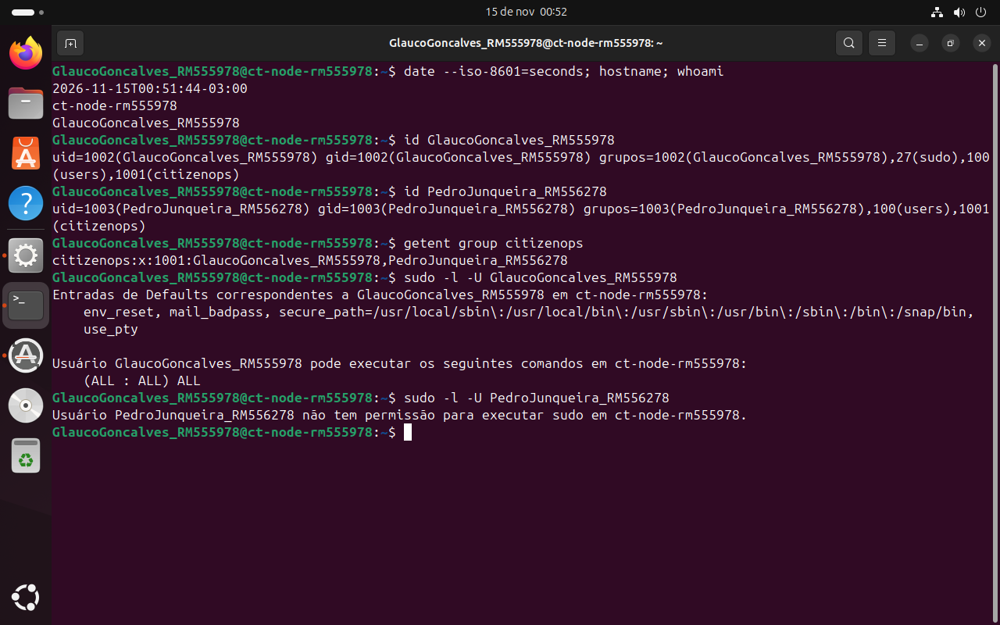
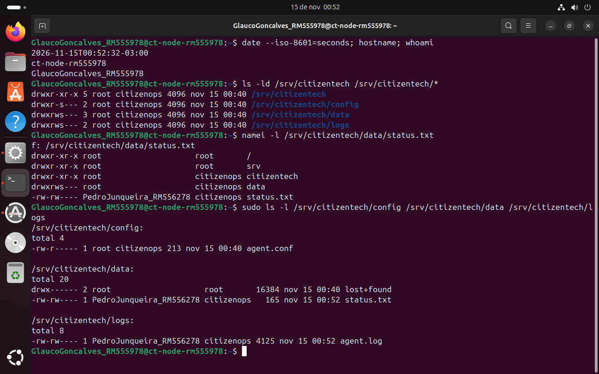
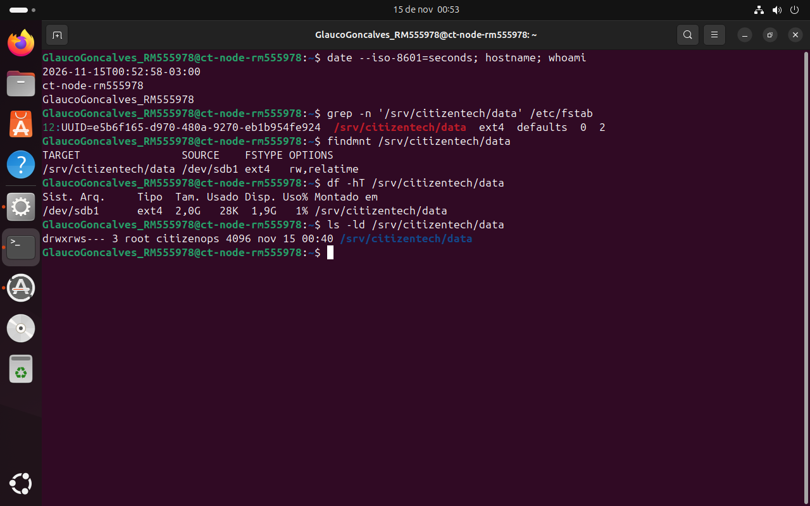
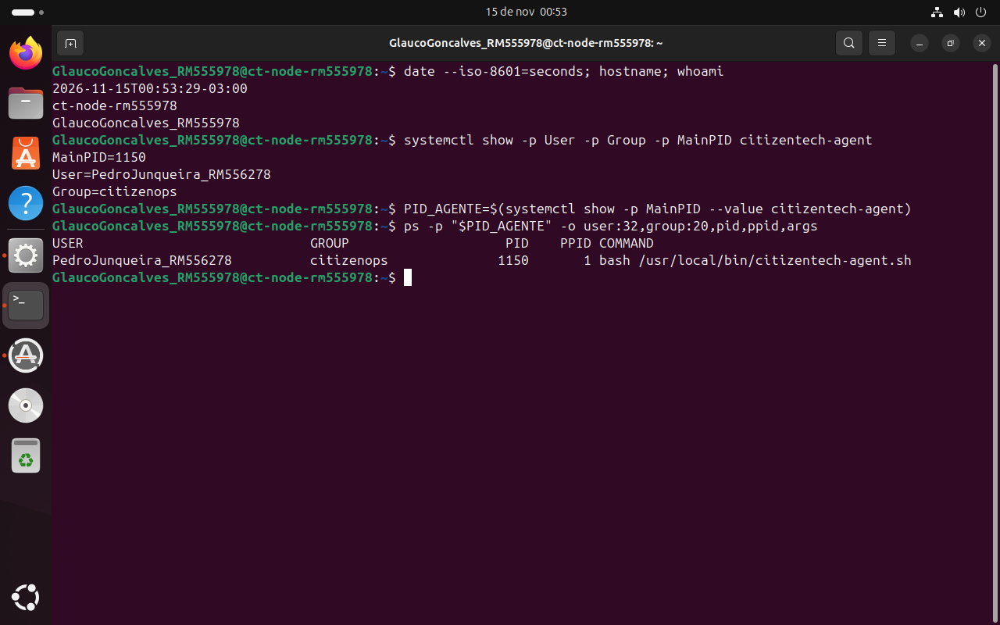
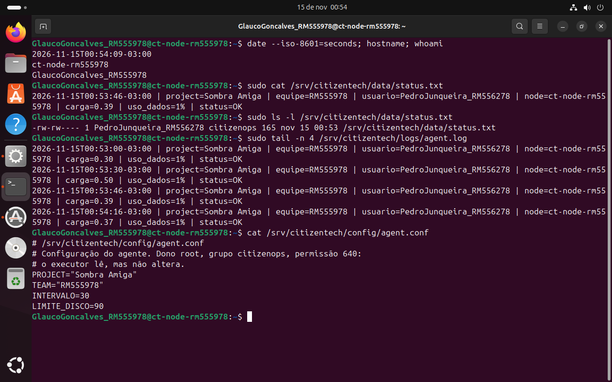
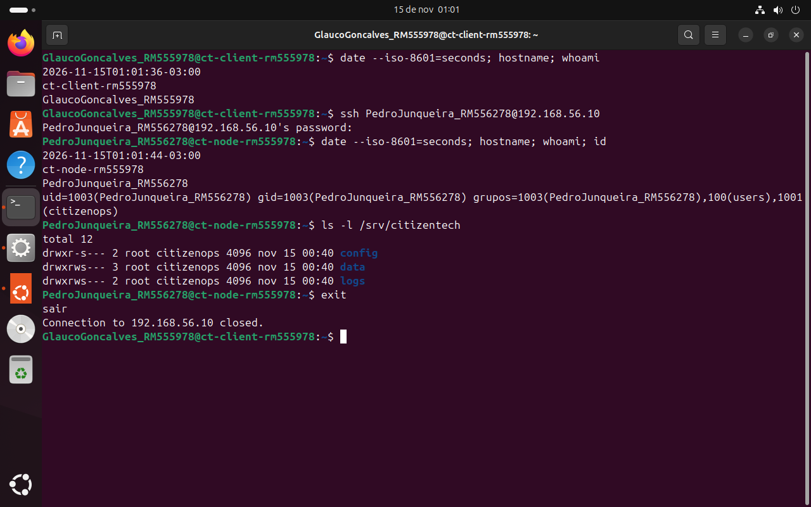
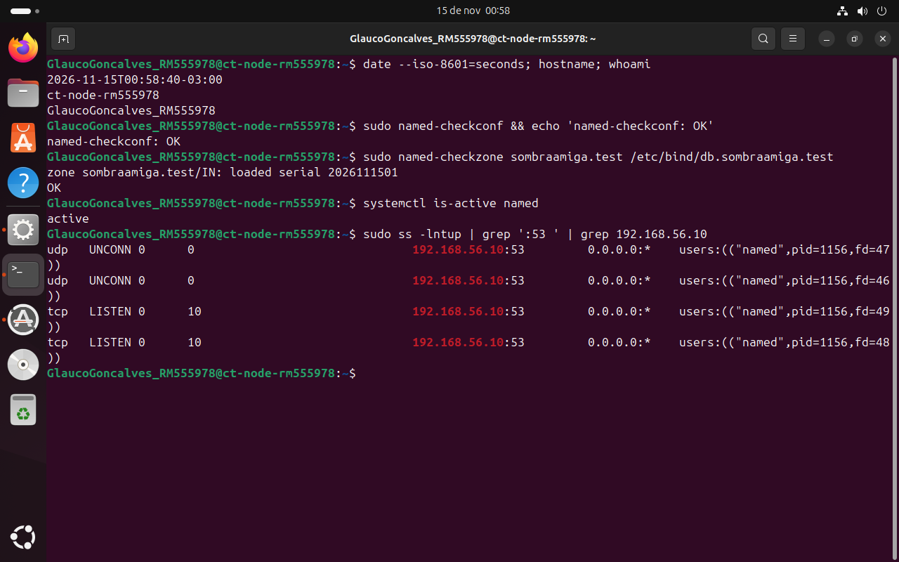
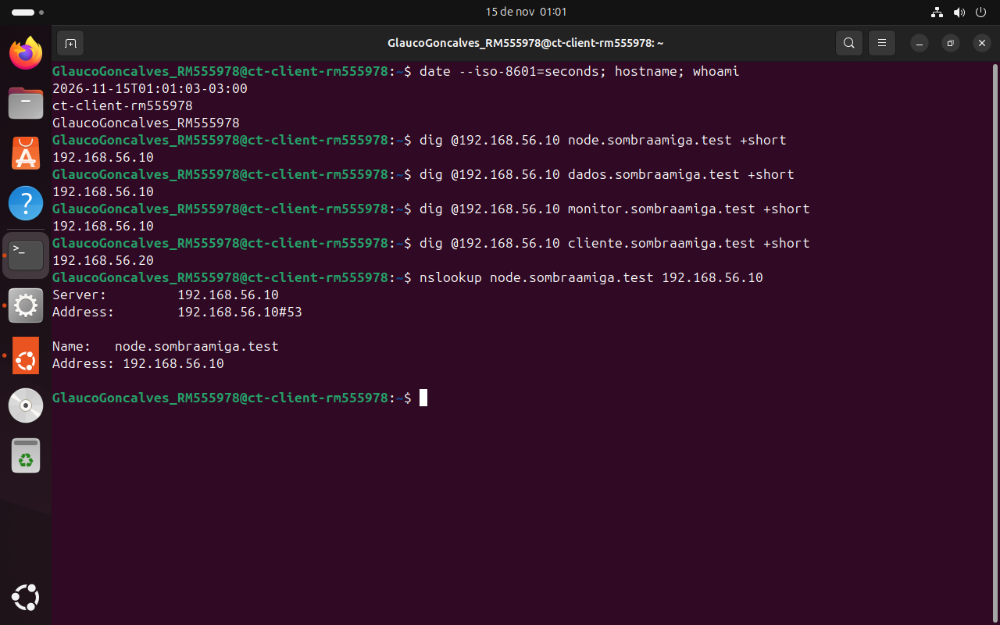
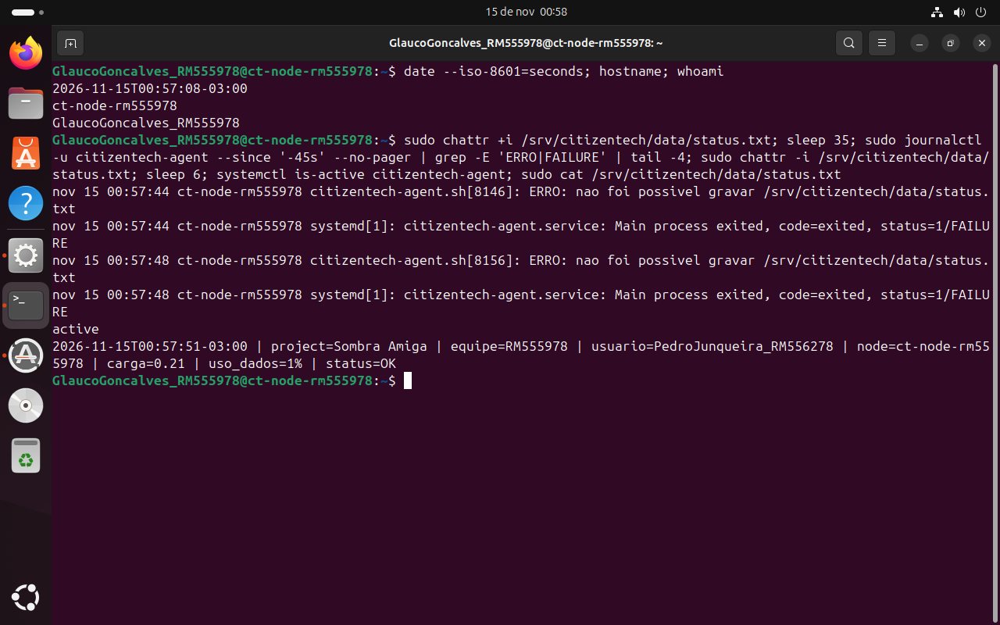

Relatório técnico — Global Solution 2026.2 — Operating Systems
Nó de Infraestrutura Linux da CitizenTech
| Turma | 3ESPG — Engenharia de Software, FIAP |
|---|---|
| Líder | Glauco Heitor Gonçalves — RM 555978 — GlaucoGoncalves_RM555978 — administrador |
| Integrante | Pedro Henrique Junqueira — RM 556278 — PedroJunqueira_RM556278 — executor do agente |
| ODS relacionados | 3 (Saúde e Bem-Estar), 10 (Redução das Desigualdades), 11 (Cidades e Comunidades Sustentáveis), 13 (Ação Contra a Mudança Global do Clima) |
| Data da entrega | Novembro de 2026 (prazo 19/11/2026, 23h59) |
| Arquivo | GS_OS_GlaucoGoncalves_RM555978.zip |
| Campo | Conteúdo |
|---|---|
| Cidadão beneficiado | Idosos e trabalhadores de rua expostos ao calor extremo |
| Problema em uma frase | Nos dias de calor extremo, idosos e trabalhadores de rua não sabem a tempo que correm risco nem onde encontrar sombra e água por perto. |
| Como a solução ajuda | Sensores nos pontos de hidratação medem o calor, um modelo prevê o risco do dia seguinte e o app avisa o cidadão, mostra os pontos de sombra e água próximos e permite um check-in "estou bem" para um familiar acompanhar. |
| ODS relacionados | 3, 10, 11 e 13 (tabela abaixo) |
| Domínio de teste | sombraamiga.test |
| Cidade e bairro | São Paulo, Brasilândia (zona norte) |
| Indicador proposto de impacto | Percentual de check-ins "estou bem" confirmados em dias de alerta de calor (cidadãos que confirmaram ÷ cidadãos cadastrados que receberam o alerta). |
| ODS | Nome | Resumo objetivo (ONU Brasil) | Como a CitizenTech contribui |
|---|---|---|---|
| 3 | Saúde e Bem-Estar | Assegurar uma vida saudável e promover o bem-estar para todas e todos, em todas as idades. Meta 3.d: reforçar o alerta precoce e a redução de riscos à saúde. | Avisa com antecedência sobre o calor extremo, que agrava problemas cardíacos e respiratórios em idosos; o check-in permite que um familiar perceba quem não respondeu. |
| 10 | Redução das Desigualdades | Reduzir a desigualdade dentro dos países e entre eles. Meta 10.2: inclusão social de todos, independentemente de idade ou condição econômica. | Atende quem mais sofre com o calor e tem menos recursos para se proteger: idosos e trabalhadores de rua de um bairro periférico. |
| 11 | Cidades e Comunidades Sustentáveis | Tornar as cidades inclusivas, seguras, resilientes e sustentáveis. Meta 11.7: espaços públicos seguros e acessíveis, em especial para pessoas idosas. | Mapeia e divulga pontos públicos de sombra e água na Brasilândia. |
| 13 | Ação Contra a Mudança Global do Clima | Tomar medidas urgentes para combater a mudança climática e seus impactos. Metas 13.1 e 13.3: adaptação a riscos climáticos e alerta precoce. | Usa dados de temperatura para prever ondas de calor e alertar a população: adaptação a um efeito local da mudança do clima. |
Duas VMs Ubuntu Desktop no VirtualBox, cada uma com uma placa NAT (repositórios) e uma placa host-only na rede privada. O CT-NODE concentra o que a Sombra Amiga precisa como base operacional: contas nominais com papéis separados, uma área de dados em disco próprio (isolada do sistema e persistente), um agente supervisionado pelo systemd que registra o estado do nó, acesso remoto administrativo e nomes de rede consistentes. Em produção, esse nó receberia os componentes da solução (API, painel e coleta dos sensores dos pontos de hidratação); essa integração está fora do escopo desta disciplina e aparece no repositório do projeto apenas como trabalho complementar (pasta infra/).
| Nome completo | RM | Login NomeAluno_RM (nas duas VMs) | Turma | Papel |
|---|---|---|---|---|
| Glauco Heitor Gonçalves | 555978 | GlaucoGoncalves_RM555978 | 3ESPG | Líder e administrador (grupo sudo) |
| Pedro Henrique Junqueira | 556278 | PedroJunqueira_RM556278 | 3ESPG | Executor do agente (sem sudo) |
| Item | Decisão da equipe | Evidência |
|---|---|---|
| Aluno administrador | GlaucoGoncalves_RM555978, membro de sudo | E02_01, E02_02 |
| Aluno executor do agente | PedroJunqueira_RM556278, sem sudo; User= da unit | E02, E05_02 |
| Grupo operacional | citizenops (os dois integrantes) | E02 |
| Diretório de dados | /srv/citizentech/data — root:citizenops, 2770 (2º disco montado) | E03, E04_02 |
| Diretório de configuração | /srv/citizentech/config — root:citizenops, 2750; agent.conf 640 (executor só lê) | E03, E06_02 |
| Diretório de logs | /srv/citizentech/logs — root:citizenops, 2770; agent.log do executor | E03 |
O bit setgid (2) mantém o grupo citizenops nos arquivos novos. Outros usuários não acessam nenhum dos três diretórios. A sessão do executor não tem sudo (sudo -l -U PedroJunqueira_RM556278: sem permissão).


Segundo disco virtual de 2 GB (/dev/sdb) só no CT-NODE, com tabela GPT, uma partição sdb1 e sistema de arquivos ext4 com rótulo CITIZENDATA. Ele é montado em /srv/citizentech/data pela linha abaixo do /etc/fstab, que usa o UUID:
UUID=e5b6f165-d970-480a-9270-eb1b954fe924 /srv/citizentech/data ext4 defaults 0 2
Como a montagem esconde as permissões do diretório original, o dono root:citizenops e o modo 2770 foram reaplicados depois da primeira montagem. A persistência foi validada com umount + mount -a e com reinicialização da VM (seção 9).

O agente (/usr/local/bin/citizentech-agent.sh) registra a cada 30 segundos que o nó está operacional. Ele lê PROJECT e TEAM de /srv/citizentech/config/agent.conf, grava o estado atual em /srv/citizentech/data/status.txt (no 2º disco), acrescenta o histórico em /srv/citizentech/logs/agent.log e escreve a mesma linha na saída padrão, que o journald guarda. Cada linha traz data, projeto, equipe=RM555978, usuário executor, hostname, carga do sistema e uso do volume de dados.
A unit citizentech-agent.service usa User=PedroJunqueira_RM556278, Group=citizenops, RequiresMountsFor=/srv/citizentech/data e Restart=always; está enabled e active (E05_01). Falha de gravação: se qualquer escrita falhar, o agente registra ERRO na saída de erro e termina com código 1. O systemd registra status=1/FAILURE e o reinicia; a linha status=OK só é emitida depois de gravações bem-sucedidas (E06_03).


| Máquina | Hostname | IP | Função |
|---|---|---|---|
| CT-NODE | ct-node-rm555978 | 192.168.56.10/24 (enp0s8) | Infraestrutura: contas, armazenamento, agente, SSH e BIND9 |
| CT-CLIENT | ct-client-rm555978 | 192.168.56.20/24 (enp0s8) | Validação: ping, SSH e consultas DNS |
A placa privada tem IP fixo e nenhum gateway; a rota padrão continua pela placa NAT (10.0.2.2), como mostram os ip route de E07_01 e E07_02. O CT-CLIENT alcança o nó (E07_03: 4 pacotes, 0% de perda). O OpenSSH do nó está ativo, e o login foi feito do CT-CLIENT com a conta nominal do executor.

Zona sombraamiga.test, declarada em /etc/bind/named.conf.local e com registros em /etc/bind/db.sombraamiga.test (serial 2026111501).
| Registro | Tipo | Destino/IP | Justificativa |
|---|---|---|---|
| @ | NS | ns1.sombraamiga.test. | Servidor autoritativo da zona |
| ns1 | A | 192.168.56.10 | Servidor DNS |
| node | A | 192.168.56.10 | Nó de infraestrutura |
| dados | A | 192.168.56.10 | Área lógica de dados |
| monitor | A | 192.168.56.10 | Monitoramento/serviço (agente) |
| cliente | A | 192.168.56.20 | Máquina de validação |


| ID | Requisito | Comando/teste | Resultado observado |
|---|---|---|---|
| E01 | Sistema / identidade | hostnamectl, /etc/os-release nas duas VMs | ct-node-rm555978 e ct-client-rm555978, Ubuntu 24.04.5 LTS |
| E02 | Usuários / grupos / sudo | id, getent group citizenops, sudo -l -U nas duas VMs | Contas iguais nas duas VMs; Glauco com (ALL : ALL) ALL; Pedro sem sudo |
| E03 | Permissões | ls -ld, namei -l, ls -l | root:citizenops; 2770 em data e logs, 2750 em config; arquivos do executor |
| E04 | Armazenamento / fstab | lsblk -f, blkid, parted print, grep fstab, findmnt, df -hT | sdb1 ext4 CITIZENDATA montado por UUID em /srv/citizentech/data |
| E05 | Serviço / processo | systemctl status/is-enabled/show, ps -o user:32, restart | enabled, active; processo como PedroJunqueira_RM556278/citizenops; volta após restart |
| E06 | Logs / status | journalctl -u, cat status.txt, tail agent.log, falha com chattr +i | Estado recente com RM555978, executor e host; ERRO e saída 1 na falha; recuperação |
| E07 | Rede | ip a, ip route nas duas; ping do cliente | 192.168.56.10 e .20 sem gateway na privada; 0% de perda |
| E08 | SSH | ssh PedroJunqueira_RM556278@192.168.56.10 no CT-CLIENT | Login remoto; whoami/hostname/id no CT-NODE |
| E09 | DNS/BIND9 | named-checkconf, named-checkzone; 4× dig @192.168.56.10 no cliente | Sem erros; node/dados/monitor → .10 e cliente → .20 |
Problema real — instalação falhou com duas placas de rede. A primeira instalação automática das duas VMs terminou em "Algo deu errado". No terminal da sessão de instalação, apt mostrava Temporary failure resolving archive.ubuntu.com, e ip -br a e nmcli -t dev mostraram a causa: a sessão do instalador cria uma única conexão de rede para todas as placas (netplan-zz-all-en), que foi ativada na placa host-only, sem internet, deixando a placa NAT desconectada. Correção: as VMs foram reinstaladas só com a placa NAT, e a placa host-only foi acrescentada depois, com a VM desligada. O IP fixo foi configurado no sistema instalado.
Problema real — travamento do login gráfico no CT-NODE. O login travava na tela do GDM; o journalctl -p err mostrou avisos do driver de vídeo vmwgfx. Desativar o Wayland no GDM (WaylandEnable=false em /etc/gdm3/custom.conf) resolveu.
Verificações preventivas.
sudo chattr +i no status.txt, o agente registrou ERRO, saiu com código 1 e foi reiniciado pelo systemd. Com chattr -i, voltou a gravar status=OK (E06_03).findmnt mostrou o volume montado, o agente estava enabled e active, o named e o ssh estavam ativos e o IP privado continuava configurado.
O nó entrega à Sombra Amiga uma base operacional pequena e verificável:
O funcionamento é comprovado pelas evidências E01 a E09: contas e grupos nas duas VMs, disco montado pelo fstab, agente ativo e habilitado gravando estado recente com RM555978, ping e SSH do cliente para o nó, e zona válida respondendo a consultas remotas. Os testes de falha de gravação e de reinicialização mostram que o ambiente se mantém sozinho.